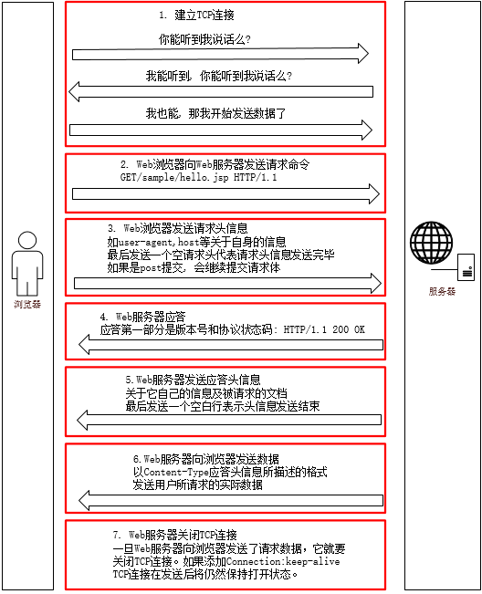

通信机制
HTTP(HyperText Transfer Protocol)是一套计算机通过网络进行通信的规则。计算机专家设计出HTTP，使HTTP客户（如Web浏览器）能够从HTTP服务器(Web服务器)请求信息和服务，HTTP目前协议的版本是1.1.HTTP是一种无状态的协议，无状态是指Web浏览器和Web服务器之间不需要建立持久的连接，这意味着当一个客户端向服务器端发出请求，然后Web服务器返回响应(response)，连接就被关闭了，在服务器端不保留连接的有关信息.HTTP遵循请求(Request)/应答(Response)模型。Web浏览器向Web服务器发送请求，Web服务器处理请求并返回适当的应答。所有HTTP连接都被构造成一套请求和应答。
HTTP使用内容类型，是指Web服务器向Web浏览器返回的文件都有与之相关的类型。所有这些类型在MIME Internet邮件协议上模型化，即Web服务器告诉Web浏览器该文件所具有的种类，是HTML文档、GIF格式图像、声音文件还是独立的应用程序。大多数Web浏览器都拥有一系列的可配置的辅助应用程序，它们告诉浏览器应该如何处理Web服务器发送过来的各种内容类型。
HTTP请求和响应步骤
HTTP通信机制是在一次完整的HTTP通信过程中，Web浏览器与Web服务器之间将完成下列7个步骤：
建立TCP连接 在HTTP工作开始之前，Web浏览器首先要通过网络与Web服务器建立连接，该连接是通过TCP来完成的，该协议与IP协议共同构建Internet，即著名的TCP/IP协议族，因此Internet又被称作是TCP/IP网络。HTTP是比TCP更高层次的应用层协议，根据规则，只有低层协议建立之后才能，才能进行更高层协议的连接，因此，首先要建立TCP连接，一般TCP连接的端口号是80
Web浏览器向Web服务器发送请求命令 一旦建立了TCP连接，Web浏览器就会向Web服务器发送请求命令 例如：GET/sample/hello.jsp HTTP/1.1
Web浏览器发送请求头信息 浏览器发送其请求命令之后，还要以头信息的形式向Web服务器发送一些别的信息，之后浏览器发送了一空白行来通知服务器，它已经结束了该头信息的发送。
Web服务器应答 客户机向服务器发出请求后，服务器会客户机回送应答， HTTP/1.1 200 OK 应答的第一部分是协议的版本号和应答状态码
Web服务器发送应答头信息 正如客户端会随同请求发送关于自身的信息一样，服务器也会随同应答向用户发送关于它自己的数据及被请求的文档。
Web服务器向浏览器发送数据 Web服务器向浏览器发送头信息后，它会发送一个空白行来表示头信息的发送到此为结束，接着，它就以Content-Type应答头信息所描述的格式发送用户所请求的实际数据
Web服务器关闭TCP连接 一般情况下，一旦Web服务器向浏览器发送了请求数据，它就要关闭TCP连接，然后如果浏览器或者服务器在其头信息加入了这行代码 Connection:keep-alive TCP连接在发送后将仍然保持打开状态，于是，浏览器可以继续通过相同的连接发送请求。保持连接节省了为每个请求建立新连接所需的时间，还节约了网络带宽。

TCP三次握手
TCP是面向连接的，无论哪一方向另一方发送数据之前，都必须先在双方之间建立一条连接。在TCP/IP协议中，TCP协议提供可靠的连接服务，连接是通过三次握手进行初始化的。三次握手的目的是同步连接双方的序列号和确认号并交换 TCP窗口大小信息。
第一次握手：建立连接。客户端发送连接请求报文段，将SYN位置为1，Sequence Number为x；然后，客户端进入SYN_SEND状态，等待服务器的确认；
第二次握手：服务器收到SYN报文段。服务器收到客户端的SYN报文段，需要对这个SYN报文段进行确认，设置Acknowledgment Number为x+1(Sequence Number+1)；同时，自己自己还要发送SYN请求信息，将SYN位置为1，Sequence Number为y；服务器端将上述所有信息放到一个报文段（即SYN+ACK报文段）中，一并发送给客户端，此时服务器进入SYN_RECV状态；
第三次握手：客户端收到服务器的SYN+ACK报文段。然后将Acknowledgment Number设置为y+1，向服务器发送ACK报文段，这个报文段发送完毕以后，客户端和服务器端都进入ESTABLISHED状态，完成TCP三次握手。
为什么要三次握手 为了防止已失效的连接请求报文段突然又传送到了服务端，因而产生错误。
具体例子：“已失效的连接请求报文段”的产生在这样一种情况下：client发出的第一个连接请求报文段并没有丢失，而是在某个网络结点长时间的滞留了，以致延误到连接释放以后的某个时间才到达server。本来这是一个早已失效的报文段。但server收到此失效的连接请求报文段后，就误认为是client再次发出的一个新的连接请求。于是就向client发出确认报文段，同意建立连接。假设不采用“三次握手”，那么只要server发出确认，新的连接就建立了。由于现在client并没有发出建立连接的请求，因此不会理睬server的确认，也不会向server发送数据。但server却以为新的运输连接已经建立，并一直等待client发来数据。这样，server的很多资源就白白浪费掉了。采用“三次握手”的办法可以防止上述现象发生。例如刚才那种情况，client不会向server的确认发出确认。server由于收不到确认，就知道client并没有要求建立连接。”
TCP四次分手
当客户端和服务器通过三次握手建立了TCP连接以后，当数据传送完毕，肯定是要断开TCP连接的啊。那对于TCP的断开连接，这里就有了神秘的“四次分手”。
第一次分手：主机1（可以使客户端，也可以是服务器端），设置Sequence Number，向主机2发送一个FIN报文段；此时，主机1进入FIN_WAIT_1状态；这表示主机1没有数据要发送给主机2了；
第二次分手：主机2收到了主机1发送的FIN报文段，向主机1回一个ACK报文段，Acknowledgment Number为Sequence Number加1；主机1进入FIN_WAIT_2状态；主机2告诉主机1，我“同意”你的关闭请求；
第三次分手：主机2向主机1发送FIN报文段，请求关闭连接，同时主机2进入LAST_ACK状态；
第四次分手：主机1收到主机2发送的FIN报文段，向主机2发送ACK报文段，然后主机1进入TIME_WAIT状态；主机2收到主机1的ACK报文段以后，就关闭连接；此时，主机1等待2MSL后依然没有收到回复，则证明Server端已正常关闭，那好，主机1也可以关闭连接了。
为什么要四次分手 TCP协议是一种面向连接的、可靠的、基于字节流的运输层通信协议。TCP是全双工模式，这就意味着，当主机1发出FIN报文段时，只是表示主机1已经没有数据要发送了，主机1告诉主机2，它的数据已经全部发送完毕了；但是，这个时候主机1还是可以接受来自主机2的数据；当主机2返回ACK报文段时，表示它已经知道主机1没有数据发送了，但是主机2还是可以发送数据到主机1的；当主机2也发送了FIN报文段时，这个时候就表示主机2也没有数据要发送了，就会告诉主机1，我也没有数据要发送了，之后彼此就会愉快的中断这次TCP连接。
HTTP请求格式
当浏览器向Web服务器发出请求时，它向服务器传递了一个数据块，也就是请求信息，HTTP请求信息由3部分组成：
- 请求方法URI协议/版本
- 请求头(Request Header)
- 请求正文
请求方法URI协议/版本
请求的第一行是“方法URL议/版本”：GET/sample.jsp HTTP/1.1 以上代码中“GET”代表请求方法，“/sample.jsp”表示URI，“HTTP/1.1代表协议和协议的版本。 根据HTTP标准，HTTP请求可以使用多种请求方法。例如：HTTP1.1支持7种请求方法：GET、POST、HEAD、OPTIONS、PUT、DELETE和TARCE。在Internet应用中，最常用的方法是GET和POST。 URL完整地指定了要访问的网络资源，通常只要给出相对于服务器的根目录的相对目录即可，因此总是以“/”开头，最后，协议版本声明了通信过程中使用HTTP的版本。
请求头(Request Header)
请求头包含许多有关的客户端环境和请求正文的有用信息。例如，请求头可以声明浏览器所用的语言，请求正文的长度等。
Accept:image/gif.image/jpeg.*/*
Accept-Language:zh-cn
Connection:Keep-Alive
Host:localhost
User-Agent:Mozila/4.0(compatible:MSIE5.01:Windows NT5.0)
Accept-Encoding:gzip,deflate.
请求正文
请求头和请求正文之间是一个空行，这个行非常重要，它表示请求头已经结束，接下来的是请求正文。请求正文中可以包含客户提交的查询字符串信息： username=jinqiao&password=1234 在以上的例子的HTTP请求中，请求的正文只有一行内容。当然，在实际应用中，HTTP请求正文可以包含更多的内容。
HTTP请求方法
GET 通过请求URI得到资源
POST 用于添加新的内容
PUT 用于修改某个内容
DELETE 删除某个内容
CONNECT 用于代理进行传输，如使用SSL
OPTIONS 询问可以执行哪些方法
PATCH 部分文档更改
PROPFIND 查看属性
PROPPATCH 设置属性
MKCOL 创建集合（文件夹）
COPY 拷贝
MOVE 移动
LOCK 加锁
UNLOCK 解锁
TRACE 用于远程诊断服务器
HEAD 类似于GET, 但是不返回body信息，用于检查对象是否存在，以及得到对象的元数据
apache2中，可使用Limit，LimitExcept进行访问控制的方法包括：GET, POST, PUT, DELETE, CONNECT,OPTIONS, PATCH, PROPFIND, PROPPATCH, MKCOL, COPY, MOVE, LOCK, 和 UNLOCK.
其中, HEAD GET POST OPTIONS PROPFIND是和读取相关的方法，MKCOL PUT DELETE LOCK UNLOCK COPY MOVE PROPPATCH是和修改相关的方法
这里只讨论GET方法与POST方法
GET方法 GET方法是默认的HTTP请求方法，我们日常用GET方法来提交表单数据，然而用GET方法提交的表单数据只经过了简单的编码，同时它将作为URL的一部分向Web服务器发送，因此，如果使用GET方法来提交表单数据就存在着安全隐患上。例如 Http://127.0.0.1/login.jsp?Name=zhangshi&Age=30&Submit=%cc%E+%BD%BB 从上面的URL请求中，很容易就可以辩认出表单提交的内容。（？之后的内容）另外由于GET方法提交的数据是作为URL请求的一部分所以提交的数据量不能太大
POST方法 POST方法是GET方法的一个替代方法，它主要是向Web服务器提交表单数据，尤其是大批量的数据。POST方法克服了GET方法的一些缺点。通过POST方法提交表单数据时，数据不是作为URL请求的一部分而是作为标准数据传送给Web服务器，这就克服了GET方法中的信息无法保密和数据量太小的缺点。因此，出于安全的考虑以及对用户隐私的尊重，通常表单提交时采用POST方法。
从编程的角度来讲，如果用户通过GET方法提交数据，则数据存放在QUERY＿STRING环境变量中，而POST方法提交的数据则可以从标准输入流中获取。
HTTP应答
HTTP应答与HTTP请求相似，HTTP响应也由3个部分构成，分别是：
- 协议状态版本代码描述
- 响应头(Response Header)
- 响应正文
协议状态代码描述
HTTP响应的第一行类似于HTTP请求的第一行，它表示通信所用的协议是HTTP1.1服务器已经成功的处理了客户端发出的请求（200表示成功）: HTTP/1.1 200 OK
响应头(Response Header)
响应头也和请求头一样包含许多有用的信息，例如服务器类型、日期时间、内容类型和长度等
HTTP应答码 HTTP应答码也称为状态码，它反映了Web服务器处理HTTP请求状态。HTTP应答码由3位数字构成，其中首位数字定义了应答码的类型：
1XX－信息类(Information),表示收到Web浏览器请求，正在进一步的处理中
2XX－成功类（Successful）,表示用户请求被正确接收，理解和处理例如：200 OK
3XX-重定向类(Redirection),表示请求没有成功，客户必须采取进一步的动作。
4XX-客户端错误(Client Error)，表示客户端提交的请求有错误 例如：404 NOT Found，意味着请求中所引用的文档不存在。
5XX-服务器错误(Server Error)表示服务器不能完成对请求的处理：如 500
对于我们Web开发人员来说掌握HTTP应答码有助于提高Web应用程序调试的效率和准确性。
安全连接
Web应用最常见的用途之一是电子商务，可以利用Web服务器端程序使人们能够网络购物，需要指出一点是，缺省情况下，通过Internet发送信息是不安全的，如果某人碰巧截获了你发给朋友的一则消息，他就能打开它，假想在里面有你的信用卡号码，这会有多么糟糕，幸运的是，很多Web服务器以及Web浏览器都有创立安全连接的能力，这样它们就可以安全的通信了。
通过Internet提供安全连接最常见的标准是安全套接层(Secure Sockets layer,SSl)协议。SSL协议是一个应用层协议(和HTTP一样)，用于安全方式在Web上交换数据，SSL使用公开密钥编码系统。从本质讲，这意味着业务中每一方都拥有一个公开的和一个私有的密钥。当一方使用另一方公开密钥进行编码时，只有拥有匹配密钥的人才能对其解码。简单来讲，公开密钥编码提供了一种用于在两方之间交换数据的安全方法，SSL连接建立之后，客户和服务器都交换公开密钥，并在进行业务联系之前进行验证，一旦双方的密钥都通过验证，就可以安全地交换数据。